Introducción
Este manual va dirigido al área de soporte técnico de la organización o a quien haga sus veces, ya que en él se detallan aspectos sobre la estructura del Sistema que le permitirá entender su funcionamiento global y posibilitar el mantenimiento del mismo. En este documento se vera reflejado las descripciones del sistema, como también la documentación del mismo, como lo son los requerimientos extraídos después de un exhaustivo análisis y las soluciones del mismo.
Companentes
Algunos de los componentes de este documento son:
Objetivos generales y específicos
Se debe de describir el objetivo general del sistema y los objetivos específicos que se cumplieron con el desarrollo del sistema.
objetivo general del sistema.
Desarrollar e implementar aplicativo web para el control notas y asistencia del C.A.N.
objetivos específicos del sistema.
Los objetivos específicos fueron:
- Especificar los requerimientos (entrevista, cuestionarios).
- Análisis de requerimientos del proyecto (Planeación, cronograma, presupuesto, equipo de trabajo, roles).
- Diseño del aplicativo de acuerdo a los requerimientos del cliente (prototipos, versiones, uml, balsamic).
- Desarrollo del aplicativo (Base de datos, diagramas, codificación, html, javascrip, ruby, creación de módulos del sistema).
- Implementación (Pruebas del aplicativo, revisión, cambios, correcciones, manuales del sistema, capacitación al usuario final).
Contenido tecnico
Descripción de los procesos
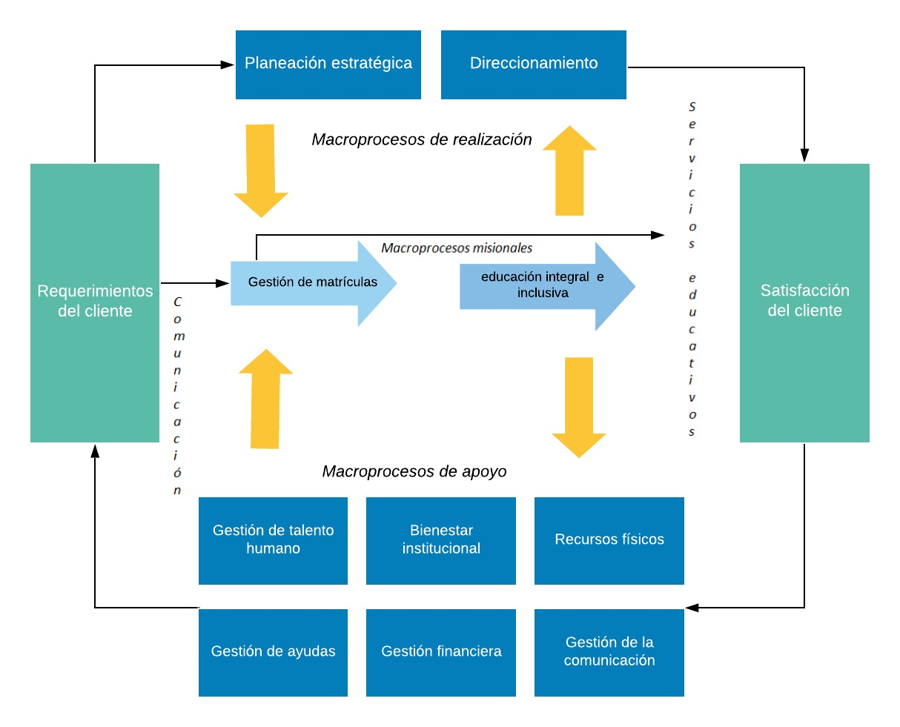Requerimientos funcionales.
- Administrar noticias.
- Visualizar noticias.
- Administrar sistema.
Diagramas UML
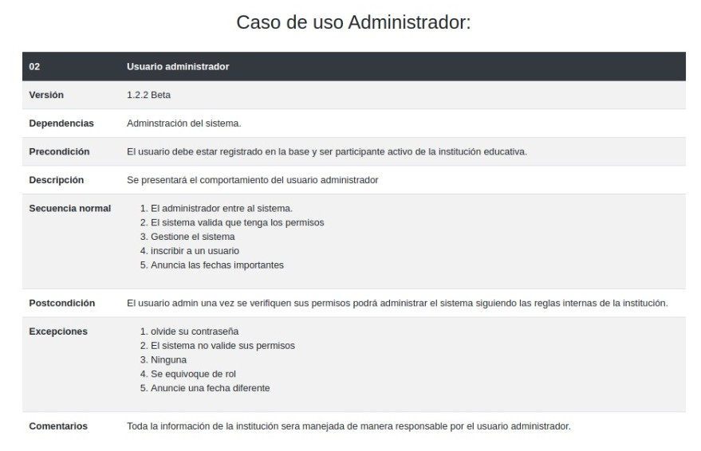 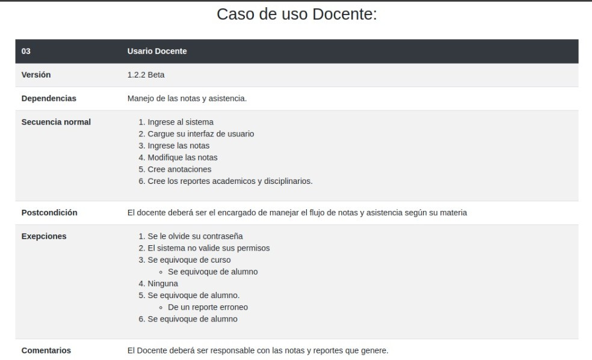 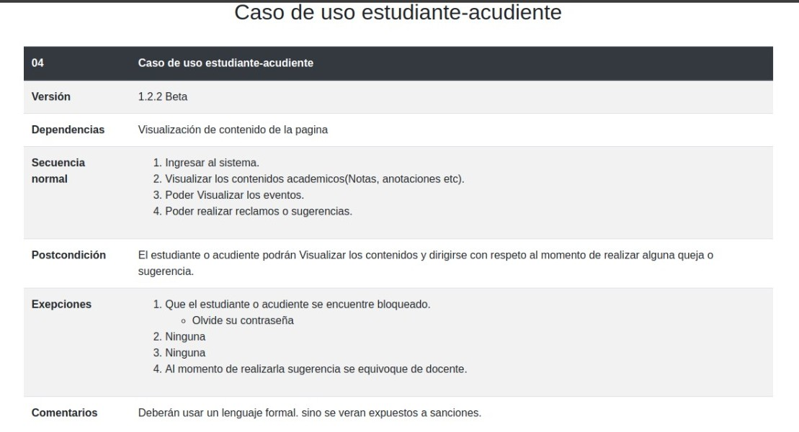 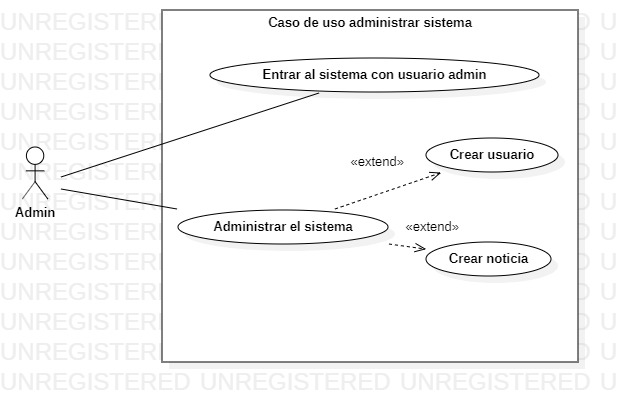 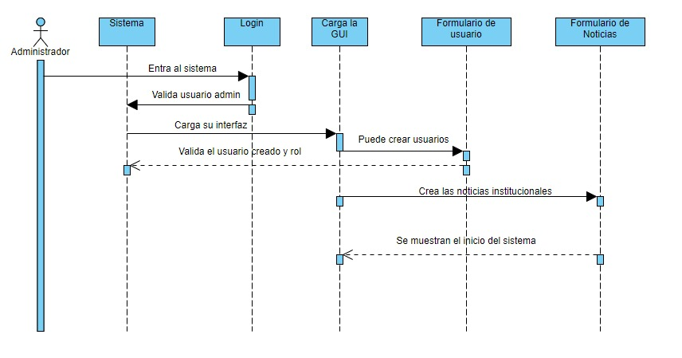 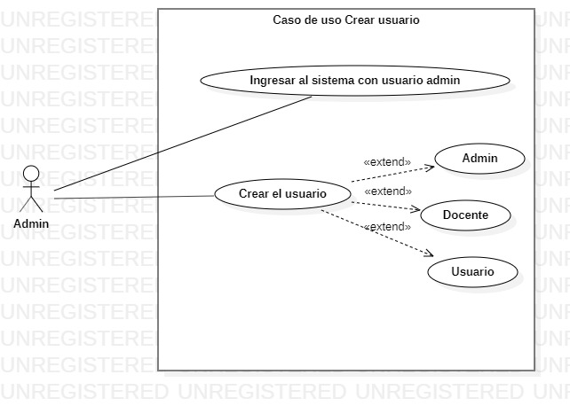 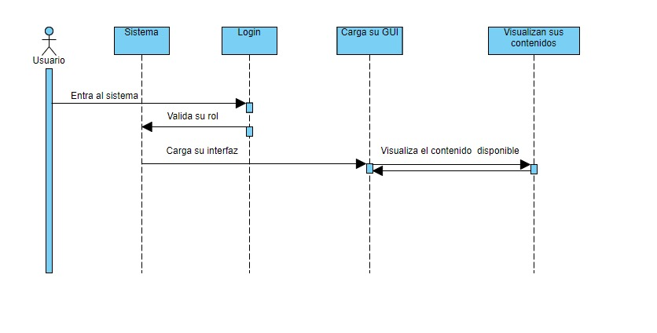 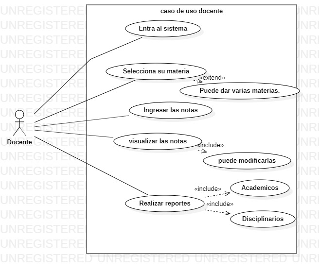 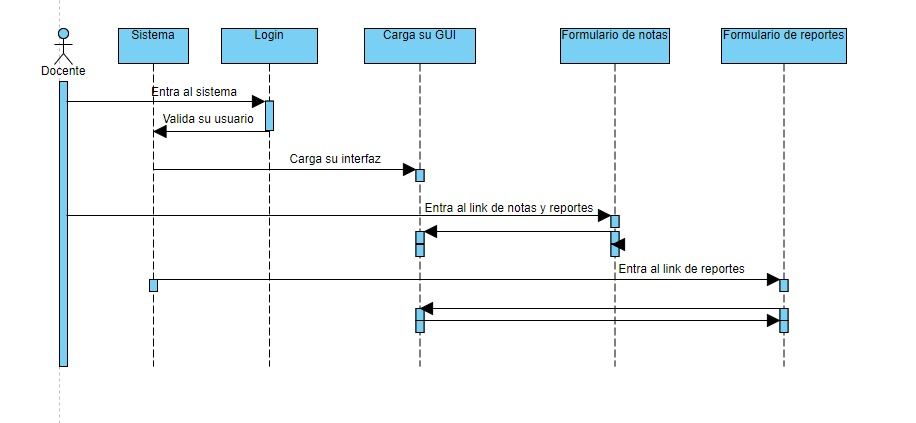 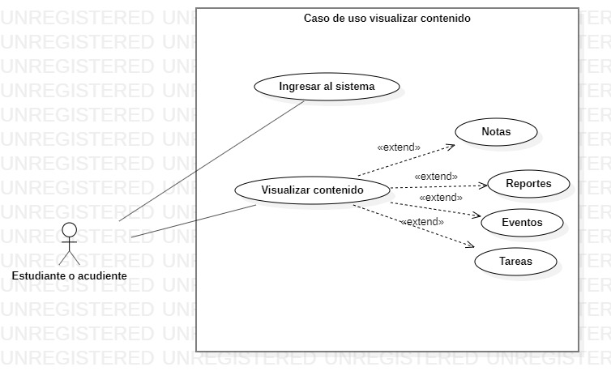 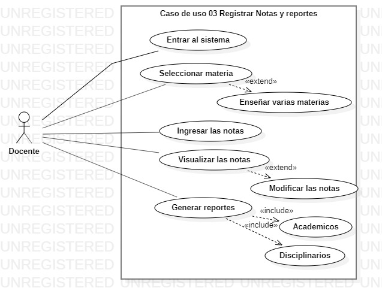 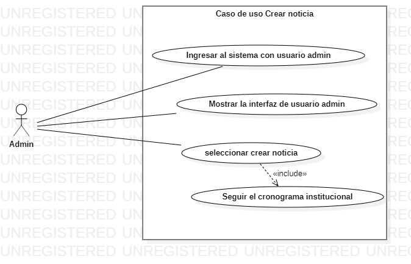Administración de usuarios.
 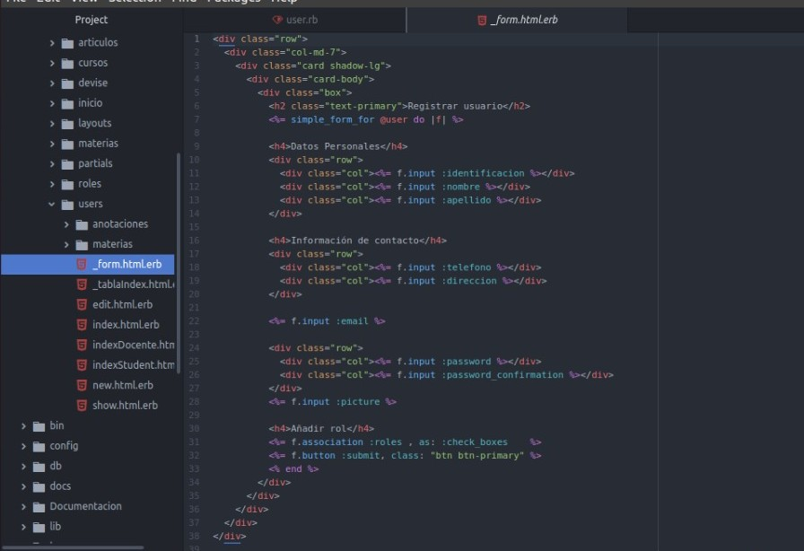
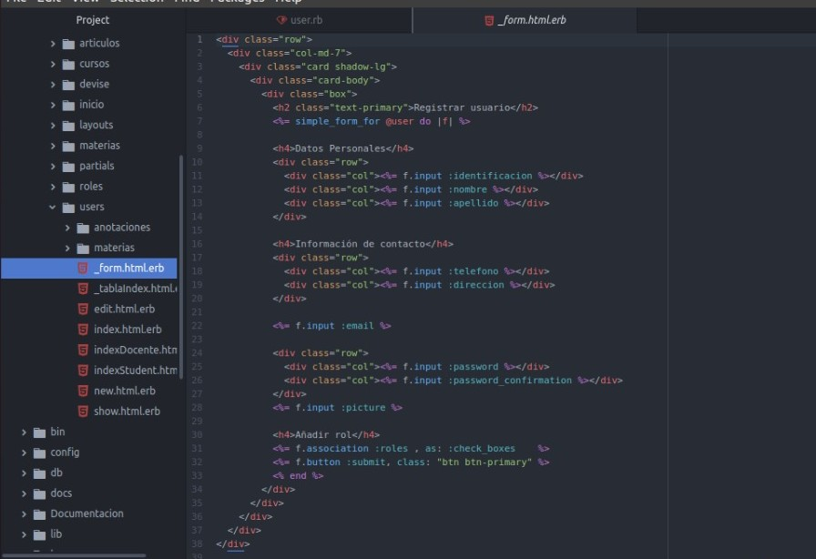
Modelo lógico de datos, diagrama entidad-relación.
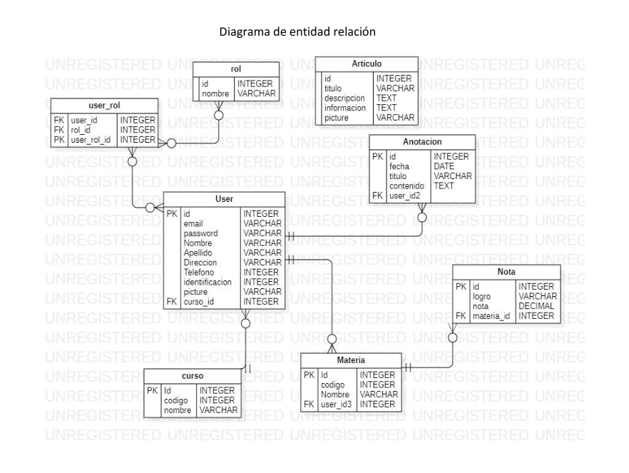 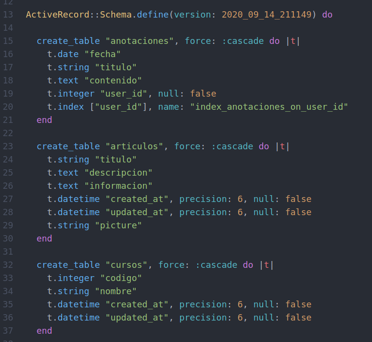 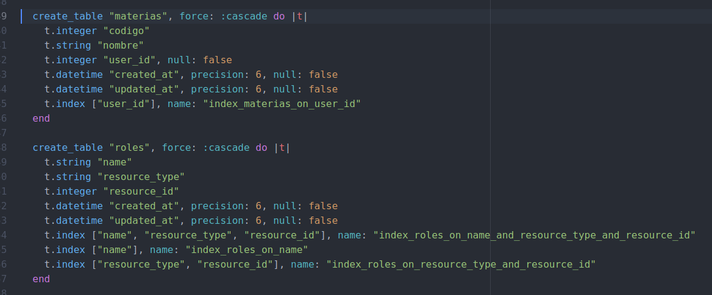 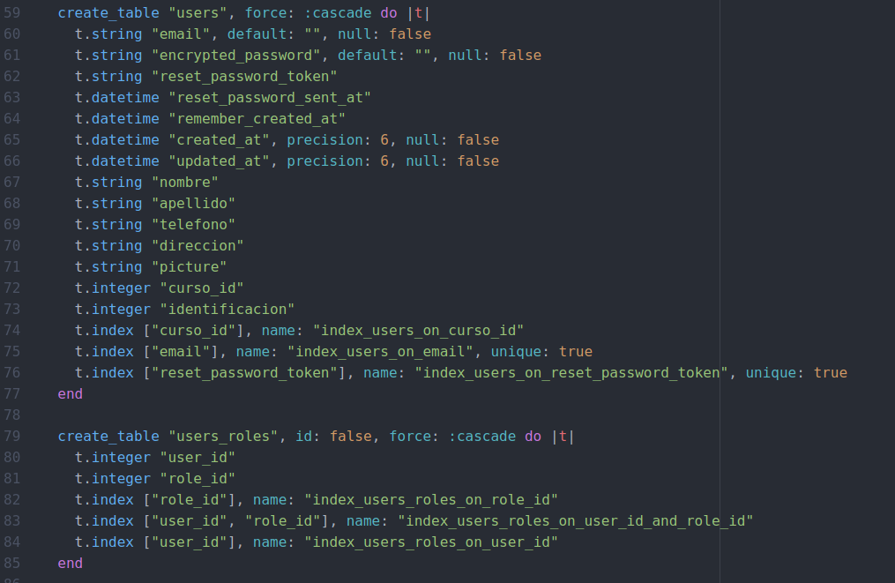 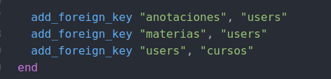Plataforma de usuario.
El aplicativo web fue desarrollado mediante el lenguaje Ruby, el desarrollo del aplicativo fu llevado a cabo mediante el framework de ruby on rails (Por lo que fue trabajo mediante un proceso de Modelo-Vista-Controlador), llevando el registro de información mediante el gestor de bases de datos PostgreSQL, los cuales trabajan sobre el sistema operacional Windows 7 y posteriores.
Documentación del código fuente.